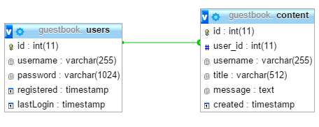

Das Gästebuch
Diese Seite dient als Dokumentation des hier vorliegenden Studienprojektes.
Zunächst soll die Aufgabenstellung umrissen und das daraus resultierende Konzept vorgestellt werden.
Anschließend werden die einzelnen Komponenten dieser Web-Applikation und deren technischen Details erläutert.
Die Aufgabenstellung
Im Rahmen des Praktikums der Veranstaltung Verteilte Systeme des Studienganges Medien- und
Kommunikationsinformatik der Hochschule Reutlingen soll ein Gästebuch entwickelt werden, welches die Möglichkeit bietet, Beiträge zu
lesen und zu verfassen.
Um die verfassten Beiträge dauerhaft speichern zu können, soll eine MySQL-Datenbank verwendet, der Server in PHP
implementiert und das Frontend unter Verwendung von HTML, JavaScript und CSS realisiert werden.
Die Kommunikation zwischen Client und Server soll dabei basierend auf AJAX im JSON-Format erfolgen.
Das Konzept
Dieses Gästebuch stellt eine sogenannte Single Page Applikation dar. Die gesamte Navigation sowie sämtliche Aktionen
laufen dabei innerhalb der Seite ab, ohne dass ein erneutes Laden der Seite erforderlich ist.
Gesamt setzt sich die Seite aus drei Hauptelementen zusammen: Für die Navigationen zwischen den einzelnen Seiteninhalten
existiert eine Navigationsleiste am linken Rand. Die verschiedenen Inhalte werden im Hauptbereich in der Mitte
der Seite dargestellt. Für alle weiteren Optionen und Aktionen wie beispielsweise die Registrierung oder die Anmeldung
gibt es die sogenannte Sidebar, die sich vom rechten Rand der Seite her öffnet. Der Fokus bei diesem Entwurf liegt dabei auf
der Benutzerfreundlichkeit der Applikation: Es soll immer nur der Inhalt angezeigt werden, der für den Benutzer gerade im Moment
von Interesse ist - alles andere wird konsequent ausgeblendet!
Des Weiteren verfügt das Gästebuch über zwei unterschiedliche Bereiche. Im öffentlichen Bereich kann jeder Benutzer anonym unter
Verwendung eines temporären Benutzernamens neue Beiträge verfassen. Beiträge in diesem Bereich können von jedem gelesen werden,
der die Seite aufruft. Zum privaten Bereich haben dagegen lediglich registrierte Mitglieder Zugang. Beiträge in diesem Bereich können von
nicht angemeldeten Benutzern nicht eingesehen werden. Für die Registrierung werden ein noch nicht verwendeter Benutzername sowie ein
Passwort benötigt.
Die Datenbank
Die Datenbank besteht aus zwei Tabellen: Die Tabelle
users beinhaltet alle Informationen über registrierte Mitglieder, wohingegen
content der Speicherung aller verfassten Beiträge dient. Dabei werden sowohl Beiträge aus dem öffentlichen als auch solche aus
dem privaten Bereich in dieser Tabelle abgelegt.

Die Unterscheidung, welchem Bereich ein Beitrag angehört, geschieht über die
angehängten Benutzerinformationen. Da private Beiträge nur von registrierten Benutzern verfasst werden können, wird bei diesen
eine gültige
User ID in der Datenbank hinterlegt. Bei öffentlichen Beiträgen kann keine User ID gesetzt werden, da diese
von anonymen Benutzern erstellt werden. Daher wird hier direkt der temporäre Benutzername des Erstellers gespeichert, die User ID wird
auf den Wert
NULL gesetzt.
Der Server